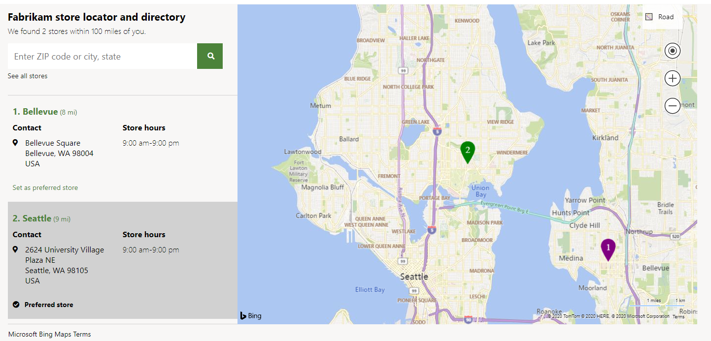

Kartenmodul
Important
Dynamics 365 Retail ist jetzt Dynamics 365 Commerce und bietet umfassende Handelsfunktionen für alle Kanäle – von E-Commerce über Shops bis hin zu Callcentern. Weitere Informationen zu diesen Änderungen finden Sie unter Microsoft Dynamics 365 Commerce.
In diesem Thema werden Kartenmodule behandelt und deren Konfiguration in Microsoft Dynamics 365 Commerce beschrieben.
Übersicht
Ein Kartenmodul zeigt die Standorte von Geschäften auf einer interaktiven Karte an, die mithilfe der Bing Maps V8 Web Control gerendert wird. Ein Bing Maps-API-Schlüssel ist erforderlich und muss auf der Seite „Freigegebene Parameter“ in Commerce Headquarters hinzugefügt werden. Kartenmodule bieten verschiedene Ansichten wie Straße, Luftbild und Streetside, die Benutzer auswählen können, um Kartenpositionen anzuzeigen. Sie erlauben außerdem Interaktionen wie Zoomen und die Verwendung des Standortes des Benutzers.
Ein Kartenmodul ermittelt in Verbindung mit dem Shopauswahlmodul die geografischen Standorte von Geschäften, die auf einer Karte gerendert werden müssen. Die Shopauswahl- und Kartenmodule interagieren, wenn ein Benutzer ein Geschäft in einem dieser Module auf einer Seite auswählt. Kartenmodule können über die Interaktion mit Shopauswahlmodulen hinaus für andere Szenarien erweitert werden. Eine Modulanpassung ist jedoch erforderlich.
Note
Das Kartenmodul ist in der Dynamics 365 Commerce-Version 10.0.13 verfügbar.
Das folgende Bild zeigt ein Beispiel eines Kartenmoduls, das auf einer Ladenstandortseite verwendet wird.

Moduleigenschaften
| Eigenschaftenname | Wert | Beschreibung |
|---|---|---|
| Überschrift | Text | Die Überschrift für das Modul. |
| Reißzweckenoptionen: Standardsymbol | Bild | Das Reißzweckensymbol, das für Geschäfte verwendet werden soll, die auf einer Karte angezeigt werden. |
| Reißzweckenoptionen: Aktives Symbol | Bild | Das Reißzweckensymbol, das für ein Geschäft verwendet werden soll, das auf einer Karte ausgewählt wird. |
| Reißzweckenoptionen: Standardsymbolfarbe | Zeichenfolge | Der Text- oder Hexadezimalwert für die Farbe der Reißzweckensymbole auf einer Karte. |
| Reißzweckenoptionen: Farbe aktives Symbol | Zeichenfolge | Der Text- oder Hexadezimalwert für die Farbe der auf einer Karte ausgewählten Reißzweckensymbole. |
| Index anzeigen | True oder False | Wenn diese Eigenschaft auf Wahr gesetzt wird, zeigt jedes Reißzweckensymbol, das für ein Geschäft steht, eine Zahl an. Diese Zahl stimmt mit der Zahl in der Listenansicht überein, die das Shopauswahlmodul anzeigt. |
Zulässige Kartierungs-URLs zu den Inhaltssicherheitsrichtlinien einer Website hinzufügen
Damit das Kartenmodul mit Bing Karten interagieren kann, müssen Sie sicherstellen, dass die folgenden Zuordnungs-URLs gemäß der Inhaltssicherheitsrichtlinie (CSP) Ihrer Website zulässig sind. Diese Einstellung erfolgt im Commerce Site Builder, indem zulässige URLs zu verschiedenen Inhaltssicherheitsrichtlinie der Website hinzugefügt werden (z. B. img-src). Weitere Informationen finden Sie unter Inhaltssicherheitsrichtlinie (This is an external link).
- Fügen Sie der connect-src-Richtlinie *.bing.com hinzu.
- Fügen Sie der img-src-Richtlinie *.virtualearth.net hinzu.
- Fügen Sie zur script-src-Richtlinie *.bing.com, *.virtualearth.net hinzu.
- Fügen Sie der script style-src-Richtlinie *.bing.com hinzu.
Ein Kartenmodul einer Seite hinzufügen
Ausführliche Informationen zum Konfigurieren eines Kartenmoduls auf einer Seite finden Sie unter Shopauswahlmodul.
Zusätzliche Ressourcen
Übersicht über die Modulbibliothek
Bing Karten für Ihr Unternehmen verwalten (This is an external link)